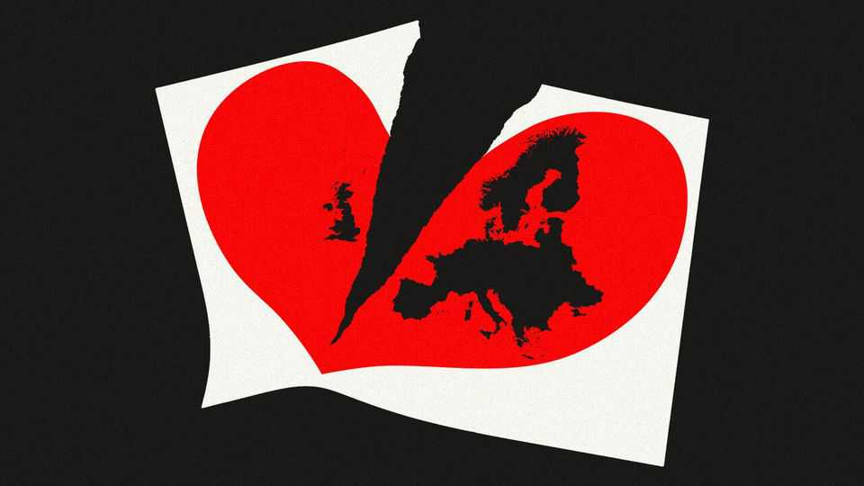

Britain’s departure made Europe more French
A smaller EU has learned to live without Britain
June 18th 2026

At the time of the Brexit referendum in June 2016, many predicted that in the next decade the European Union would either fall apart or march briskly towards ever-closer union. Which one depended on who was talking. Right-wing populists, including those in Britain’s Leave campaign, forecast that the first country to leave the bloc would trigger a domino effect of others yearning to break free. Europhiles, for their part, spotted an opportunity: with the non-continental stick-in-the-mud gone, a more cohesive EU could be forged. Both sides agreed that English, the tongue of l’Albion perfide, would lose its grip over Brussels.
As of 2026, neither scenario has panned out—though the federalist version is closer to the mark. No other country has come close to leaving the EU. That is unsurprising, given how the years-long negotiations over the modalities of exiting the bloc upended British politics. Meanwhile, the union has deepened a bit. The absence of a big liberal brake on French statist schemes has nudged it towards more integration, at least in places. In many ways the EU has remained the same. English is even more of a lingua franca in Brussels than it was in 2016.
Still, there are three big differences between today’s EU and that of a decade ago. The most notable evolution is fiscal. In July 2020, just six months after Britain formally departed, the EU’s remaining 27 members agreed on an €800bn ($928bn) covid recovery fund. Not only did this mark a large expansion of the bloc’s budget, which normally amounts to 1% or so of GDP. It was also the first instance of spending paid for through issuance by the EU of bonds in its own name, a federalising act of a sort Britain would surely have derailed had it been in on the negotiations.
The second big change regards economic policymaking. Since Brexit the EU has taken a markedly dirigiste turn. Britain was among the bloc’s most ardent free-trading and liberal voices, the leader of a northern European group that balked at EU protectionism and overregulation. For decades it led the resistance to French-infused schemes that aimed to craft a European industrial policy. That term was long a taboo in Brussels. Now it is a core part of the EU’s goal of “strategic autonomy”—another French obsession. With Britain absent from decision-making summits, economic interventionism is rife these days. The EU has eased rules that prevented national governments from subsidising favoured industries. It has imposed tariffs on Chinese electric vehicles and sought to reduce unwanted dependence on imports, for example by pushing for “Made in Europe” clauses in public procurement. All of this is very un-British.
Another marked evolution concerns defence. The British were among the members most sceptical of EU military efforts: as firm Atlanticists, they worried about undermining NATO. In 2024 the European Commission, the EU’s executive arm, was restructured to add a defence commissioner (albeit one that looks after the defence industry, rather than more operational military matters). Still, the EU has increasingly weighed in on matters of war, for example by directly funding arms sent to Ukraine.
These three evolutions have something in common. All were caused by outside shocks, not by Brexit. The stimulus scheme was a result of the pandemic; economic interventionism is a response to the rise of Chinese exports; and NATO no longer feels like a reliable alliance, with Donald Trump in the White House and Russian revanchism on the march. “Brexit hasn’t caused the change the EU has gone through, but it affected the solutions that it arrived at to address those changes,” says Fabian Zuleeg of the European Policy Centre, a think-tank in Brussels.
Some British priorities have survived their champion’s departure. For decades Britain pushed for EU enlargement, if only because a wider union probably meant a shallower one. Today the prospect of more countries acceding, including Ukraine, seems closer than for years. On some fronts the bloc is growing protectionist, but it is also signing trade deals, including with Mercosur, a group of countries including Brazil and Argentina. As members, the British were for that deal, the French (notably their farmers) against.
The single market is also getting attention. This was another obsession of Britain, which often thought of the EU as a free-trade area with inconvenient bells and whistles attached. Had it stayed, it would be cheering on Brussels’s attempts to deepen the single market for services and reverse years of overregulation.
In part these liberal priorities survive because Britain was never as isolated as it believed itself to be. Lots of countries shared its instincts: the Baltics and central Europeans on defence, the Scandinavians and Dutch on free trade, the Irish on Atlanticism. Northern Europeans have taken up the British baton when it comes to arguing for a smaller EU budget. Germany and the Netherlands are keen to ensure that the joint-borrowing scheme is a one-off. But without what was once the EU’s second-biggest member, that liberalising group is often fighting a rearguard action.
Perhaps the biggest impact on Brexit was on EU morale. The bloc out-negotiated Britain at every turn of the four-year-long divorce. That gave it confidence to face later crises, whether covid or Ukraine. Yet the self-deprecating humour of Britain’s EU contingent remains sorely missed, even among their former ideological enemies. And English remains: the language of a country that has left, communicating policies it never would have agreed to.■
To stay on top of the biggest European stories, sign up to Café Europa, our weekly subscriber-only newsletter.